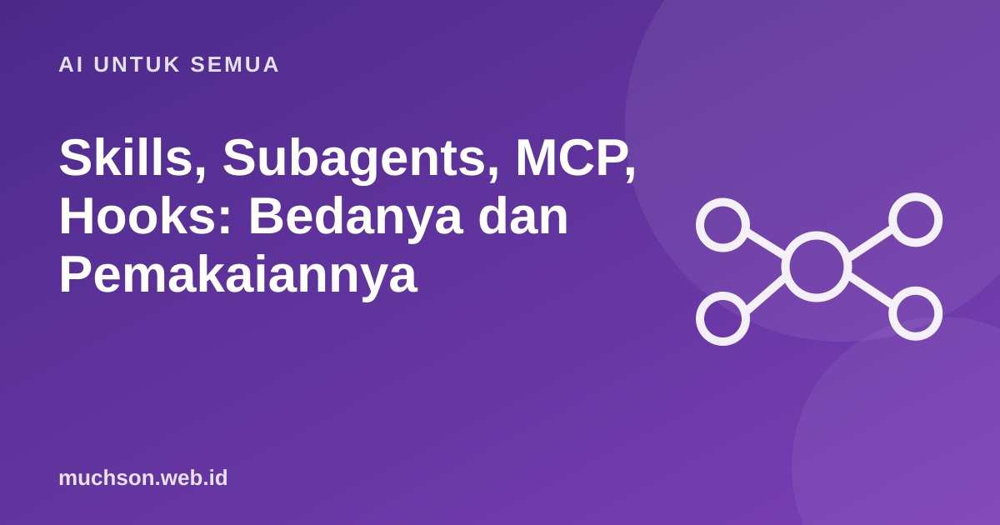

Beranda › Artikel › AI untuk Semua
AI untuk SemuaSkills, Subagents, MCP, Hooks: Bedanya dan Pemakaiannya
Dalam ekosistem agen coding, ada empat cara memperluas kemampuan: skills, subagents, MCP, dan hooks. Banyak orang memilih yang salah karena istilahnya mirip. Padahal masing-masing menjawab kebutuhan yang berbeda.

Satu kalimat untuk masing-masing
| Fitur | Fungsi | Analogi |
|---|---|---|
| Skills | Paket instruksi dan sumber daya yang dimuat saat dibutuhkan untuk tugas tertentu | Buku resep prosedur |
| Subagents | Agen terpisah dengan konteksnya sendiri untuk tugas tertentu | Asisten yang mengerjakan riset lalu melapor ringkas |
| MCP | Standar penghubung agen ke alat dan data luar | Colokan universal |
| Hooks | Perintah yang dijalankan otomatis pada peristiwa tertentu | Alarm atau pemicu otomatis |
Kapan memakai yang mana?
Urutan yang masuk akal untuk pemula
- Mulai dengan CLAUDE.md yang singkat.
- Ubah instruksi yang Anda ketik berulang menjadi skill.
- Tambahkan MCP hanya untuk alat yang benar-benar dipakai.
- Gunakan hooks untuk hal yang harus selalu terjadi.
- Gunakan subagents bila konteks percakapan sering penuh.
Catatan
Fitur-fitur ini berkembang cepat dan detailnya berubah. Gunakan artikel ini untuk memahami perannya, lalu rujuk dokumentasi resmi untuk cara pemasangan dan sintaks terbaru.
Tanya jawab
Apakah saya perlu keempatnya?
Tidak. Mulailah sederhana. Tambahkan fitur hanya ketika ada masalah nyata yang diselesaikannya.
Apakah skill sama dengan prompt tersimpan?
Mirip, tetapi skill dapat memuat instruksi, skrip, dan sumber daya yang dimuat bila relevan, sehingga lebih terstruktur.
Apakah aman memasang server MCP dari pihak lain?
Berisiko bila tidak dikenal. Periksa sumber dan izinnya, dan batasi akses seminimal mungkin.